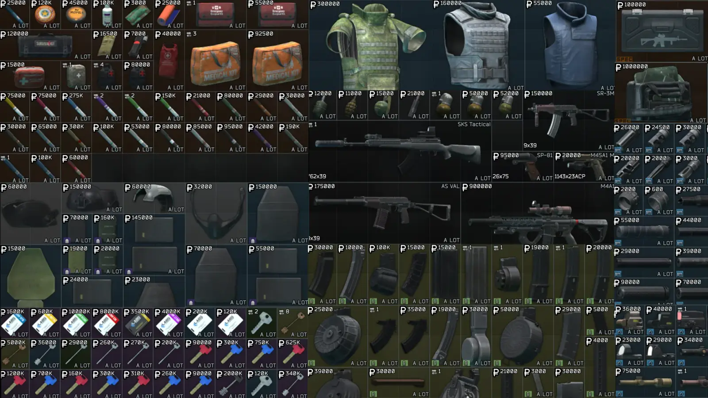
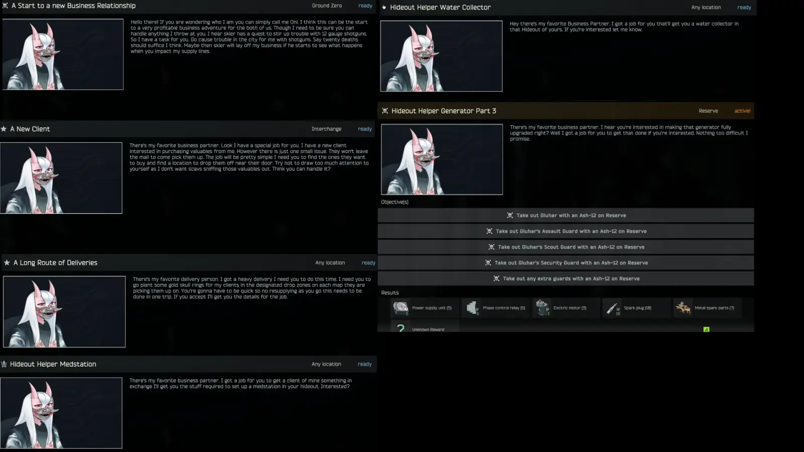

OniTrader
- Downloads
- 1,960
- Favourites
- 0
- Mod lists
- 1
THIS TRADER DISABLES THE FLEA
Certain Quests are not Fika Compatible
You need to download Virtual’s Custom Quest Loader before installing this mod!
A trader that replaces the flea enforcing a path of rouble maxing to earn gear and weapons to thrive in the harsh realm of tarkov. Oni will buy your valuables and sell gear, weapons and more to help you thrive in raid so you can keep them entertained. Every action you take and every failure you have will be known by them. They will buy your valuables only to take every rouble back with their hefty prices on gear you would want so bad. Your suffering is their entertainment so try your best!
Quests have now been added! Prepare yourself for death as you’re likely to perish attempting mainline quests. If you get through them though you’ll be rewarded with grand rewards.
Keynotes/TLDR: Big rouble maxing for trader. No roubles left for you. Try not to die
Additional Notes: This is in beta state. Every assortment is subject to change and more may be added to rebalance the trader as I feel like.
For simple installation extract using 7zip and drag and drop the user folder into your spt folder similar to this gif:

This is an example of what Oni offers to buy at max loyalty. As you progress you get access to more and more goodies.

This is an example of the quests you’ll progress through. Even included a spoiler of the exact stuff one of my future hideout helpers will make you do.

A huge thank you to Luna, CJ, Dsnyder, Light for the assistance in getting this trader to this point. Without the help I have gotten I wouldn’t have made it this far. Everyone can also thank Joe and John Tarkov for making a special barter at the end even more difficult to acquire.
Version
0.7.1
A small update to rebalance a bit before releasing Beta 2. All previous versions will be archived.